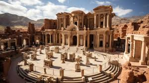
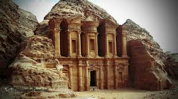
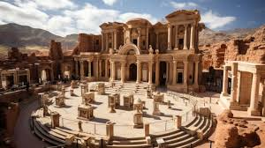
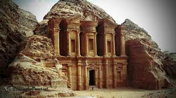

Inside Petra – a Wonder of the World
Neolithic : By 7000 BC, some of the earliest recorded farmers had settled in Beidha, a Pre-Pottery Neolithic settlement just north of Petra
Iron Age EdomThe Iron Age lasted between 1200 and 600 BC; in that time, the Petra area was occupied by the Edomites. The configuration of mountains in Petra allowed for a reservoir of water for the Edomites. This made Petra a stopping ground for merchants, making it an outstanding area for trade. Things that were traded here included wines, olive oil, and wood.
Emergence of Petra
Petra is adjacent to the mountain of> Jabal Al-Madbah, in a basin surrounded by mountains forming the eastern flank of the Arabah valley running from the Dead Sea to the Gulf of Aqaba.[25] creating an artificial oasis. The area is visited by flash floods, but archaeological evidence shows that the Nabataeans controlled these floods by the use of dams, cisterns, and water conduits. These innovations stored water for prolonged periods of drought and enabled the city to prosper from its sale. In ancient times, Petra might have been approached from the south on a track leading across the plain of Petra, around Jabal Haroun ("Aaron's Mountain"), the location of the Tomb of Aaron, said to be the burial place of Aaron, brother of Moses. Another approach was possibly from the high plateau to the north. Today, most modern visitors approach the site from the east. The impressive eastern entrance leads steeply down through a dark, narrow gorge, in places only 3–4 m (10–13 ft) wide, called the Siq ("shaft"), a natural geological feature formed from a deep split in the sandstone rocks and serving as a waterway flowing into Wadi Musa.
 


